『ちょっと余計な自動販売機』

田中茂、58歳。
口癖は「まったく、最近の世の中は」。
今日も会社で若い社員にパソコンの操作を教わり、帰りの電車では隣の男のイヤホンから音が漏れ、すっかり機嫌を悪くしていた。
「まったく、最近の世の中は……」
駅からの帰り道。
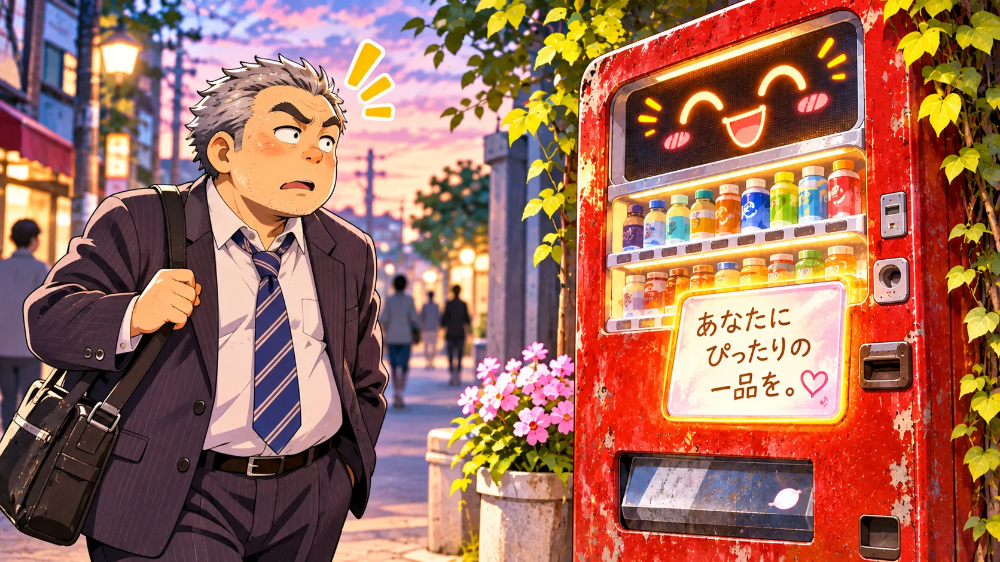
茂は、見慣れない自動販売機を見つけた。
古びた赤い自販機。
看板には、こう書かれている。
『あなたにぴったりの一品を。』
「ほう。気の利いた自販機じゃねえか」
茂は120円を入れ、ホットコーヒーのボタンを押した。
ガコンッ！
出てきたのは、
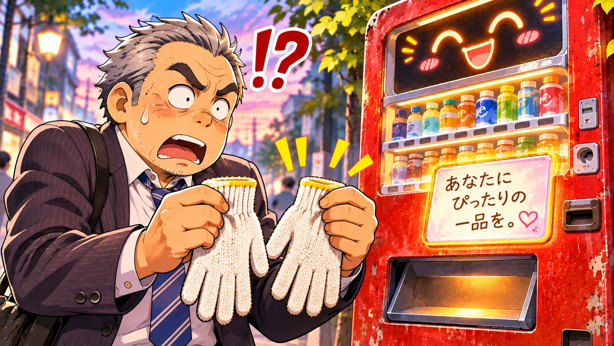
軍手だった。
「…………は？」
軍手。
右手と左手。
ご丁寧に新品。
「おい。コーヒーは？」
すると、自販機の液晶が光った。
『お買い上げありがとうございます。』
「買ってねえよ！！」
『大変お似合いでございます。』
「軍手が似合うってどういう意味だ！！」
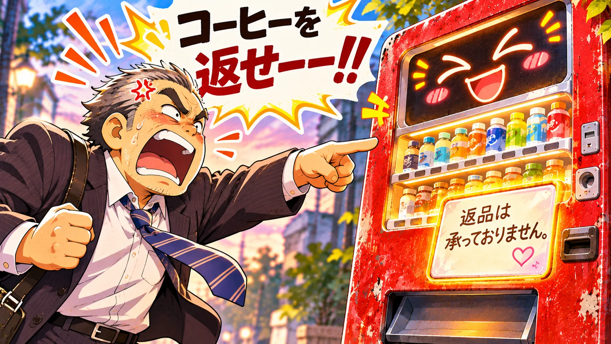
『返品は承っておりません。』
「コーヒーを返せーーー！！」
近くを歩いていた女子高生が、びっくりして振り返った。
茂は咳払いをして、軍手をポケットに突っ込んだ。
「まったく……」
その直後だった。
「あっ！ どうしよう！」
道端で、若い女性が困っていた。
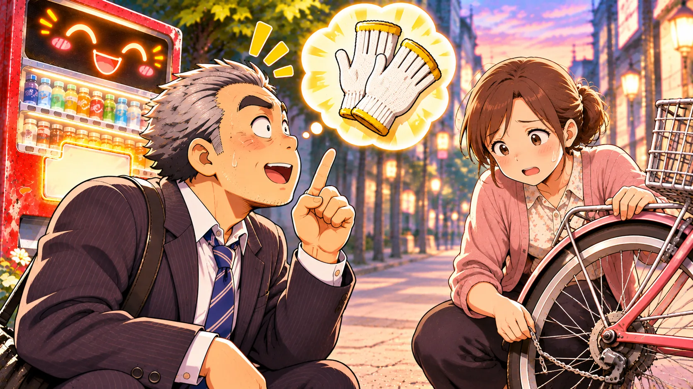
自転車のチェーンが外れ、手を真っ黒にしながら直そうとしている。
茂は立ち止まった。
「おいおい、そんな素手でやったら真っ黒になるぞ」
「あ、でも……」
「ちょっと貸してみな」
ポケットから軍手を取り出す。
「……なんで軍手持ってるんですか？」
「俺が聞きてえよ」
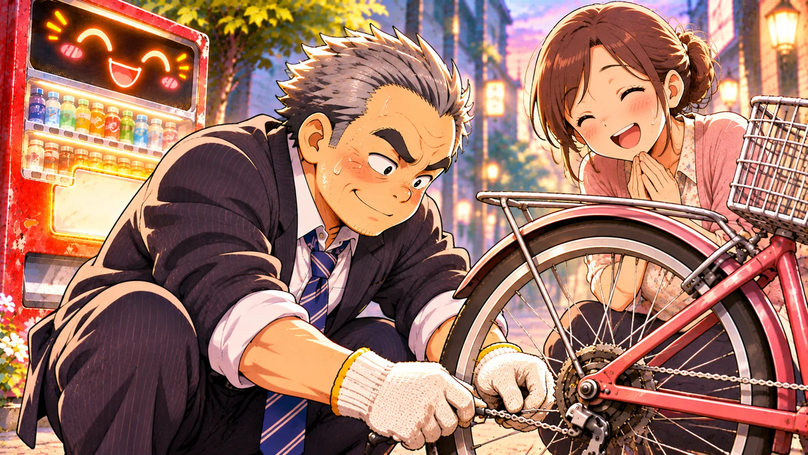
茂は手際よくチェーンを直した。
「ありがとうございます！ 助かりました！」
女性は満面の笑みを浮かべた。
茂は照れくさそうに手を振った。
「いいってことよ」
そして歩き出してから、ふと立ち止まる。
「……いや、待てよ」
振り返る。
遠くに、赤い自販機。
その液晶に、小さく文字が光っていた。
『本日のおすすめ、大成功。』
「……気のせいだな」
翌日。
茂は、また自販機の前に立っていた。
「昨日のは偶然だ。今日はちゃんとコーヒーを出せよ」
120円を入れる。
ホットコーヒーのボタンを押す。
ガコンッ！
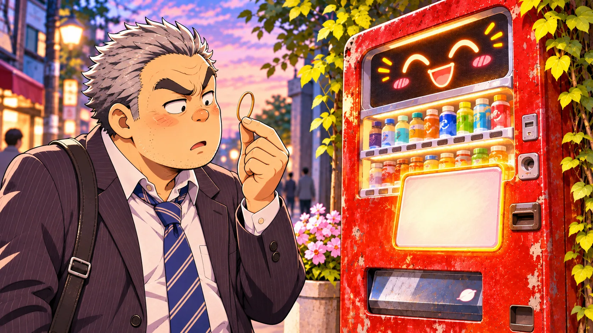
輪ゴムが一本。
「少なっ！！！」
『お買い上げありがとうございます。』
「一本120円！？ 金の輪ゴムか！！」
『伸縮性に優れた逸品でございます。』
「そこじゃねえ！！」
『お客様の柔軟性も見習っていただきたいものです。』
「うるせえ！！」
茂は輪ゴムを指に引っかけ、腹立ちまぎれに歩き出した。
すると、商店街の八百屋の前で、店主が大騒ぎしていた。
「ありゃあ！ 値札の束がバラバラになっちまった！」
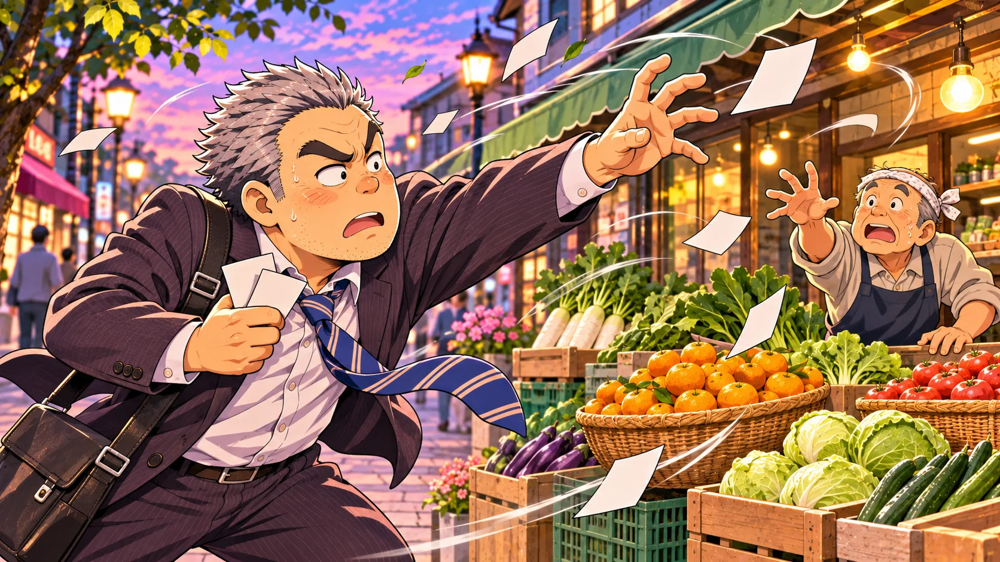
店先では、値札の紙が風に吹かれて舞い上がっていた。
「おいおい、何やってんだ！」
茂は慌てて紙を追いかけた。
一枚拾えば、二枚飛ぶ。
二枚拾えば、三枚飛ぶ。
「増えてんじゃねえか！！」
ようやく全部集め終わったころには、茂の髪はボサボサ。
「はあ、はあ……。ほらよ！」
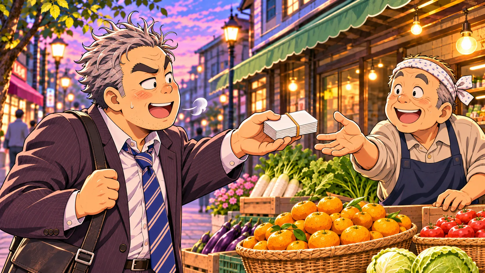
茂は集めた値札を輪ゴムでまとめ、店主に渡した。
「おお！ 助かったよ、茂さん！」
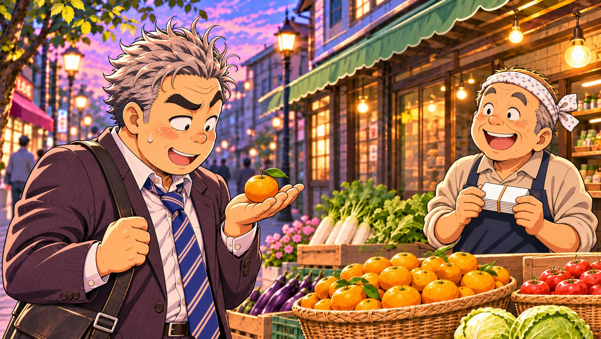
八百屋の親父は笑って、みかんを一個くれた。
「持ってきな！」
「いや、輪ゴム一本でみかんは悪いだろ」
「いいって！」
茂はみかんを受け取った。
そして、ふと考えた。
「……輪ゴム一本が、みかん一個になった？」
翌日。
自販機に向かって、茂は言った。
「おい。昨日の輪ゴムは高すぎだ」
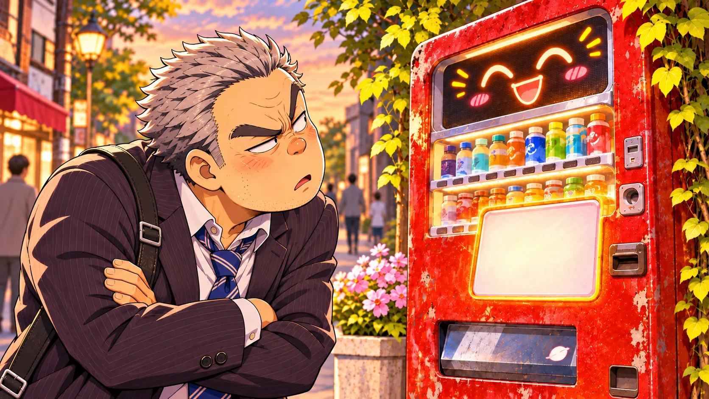
『お客様、みかんはおいしかったですか？』
「……お前、見てたのか？」
『個人情報保護のため、お答えできません。』
「絶対見てたろ！！」
それからというもの、茂は毎日のように自販機に立ち寄るようになった。
もちろん、コーヒーは一度も出てこない。
月曜日。
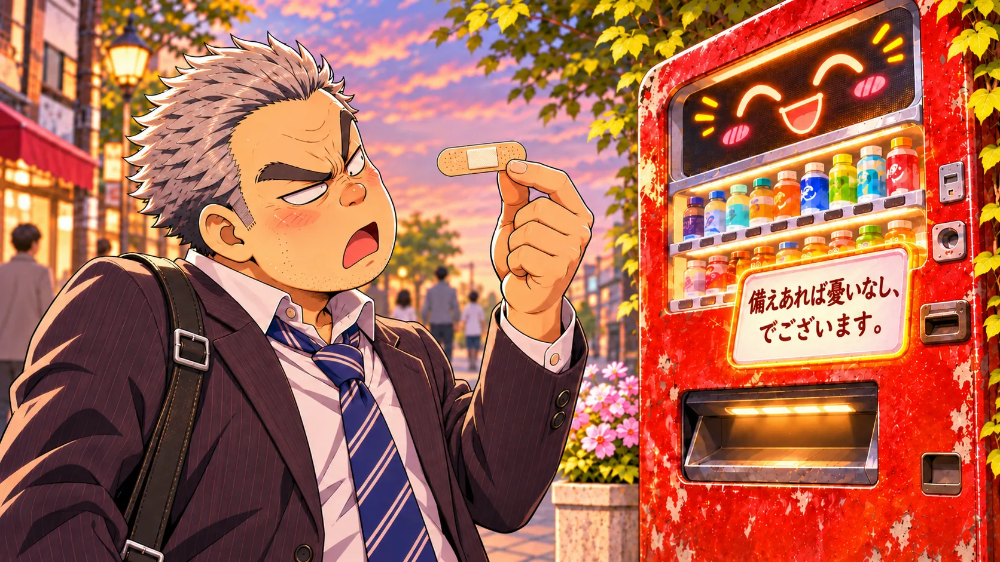
出てきたのは、絆創膏。
「怪我なんかしてねえぞ！」
『備えあれば憂いなし、でございます。』
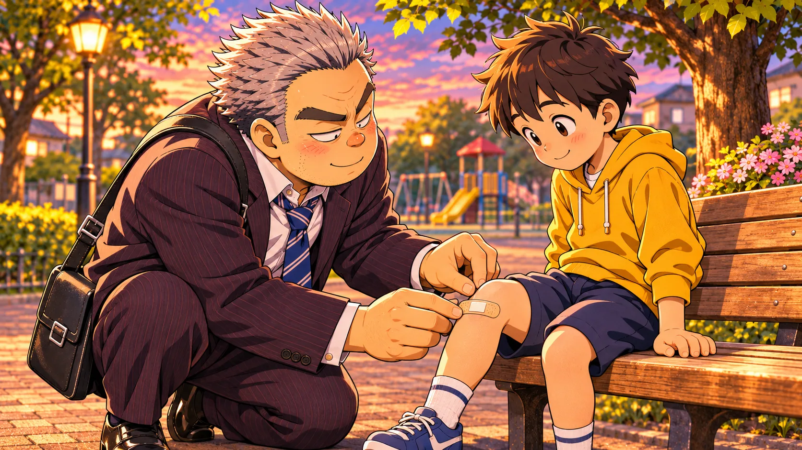
その五分後、公園で転んだ少年に絆創膏を貼ってやった。
火曜日。
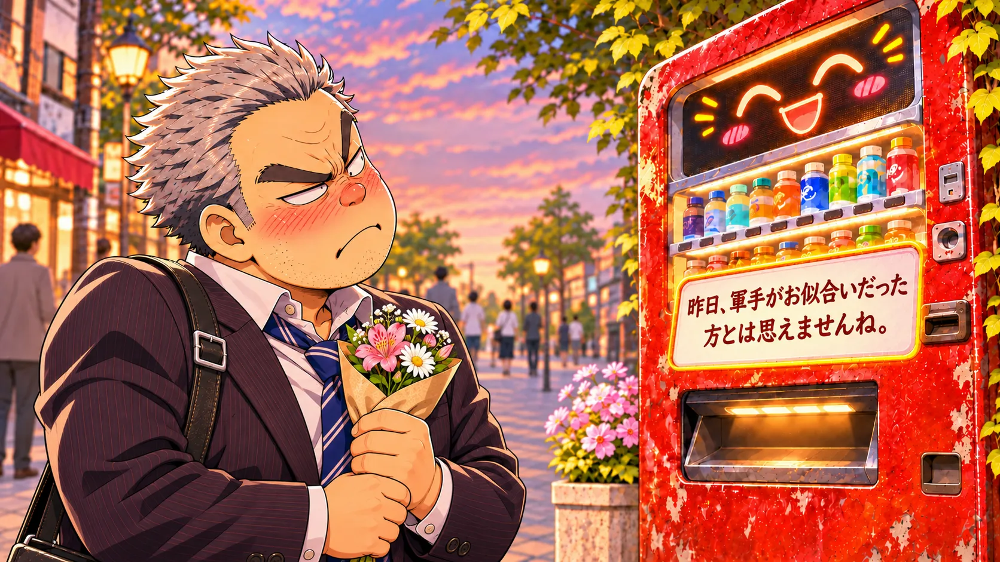
出てきたのは、小さな花束。
「俺を誰だと思ってんだ！ 花なんか似合わねえだろ！」
『昨日、軍手がお似合いだった方とは思えませんね。』
「まだ言うか！！」
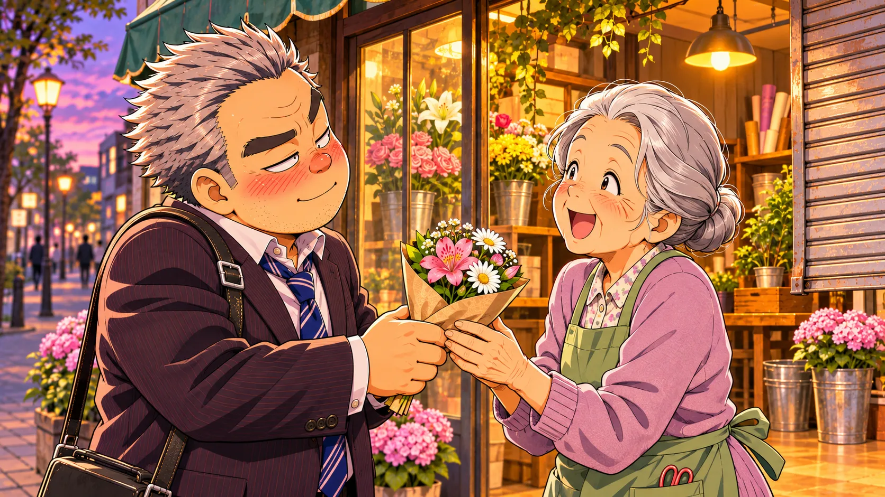
帰り道、店を閉める花屋のおばあさんに花束を渡すと、
「まあ、私に？ 何十年ぶりかしら！」
と、少女のように笑った。
水曜日。
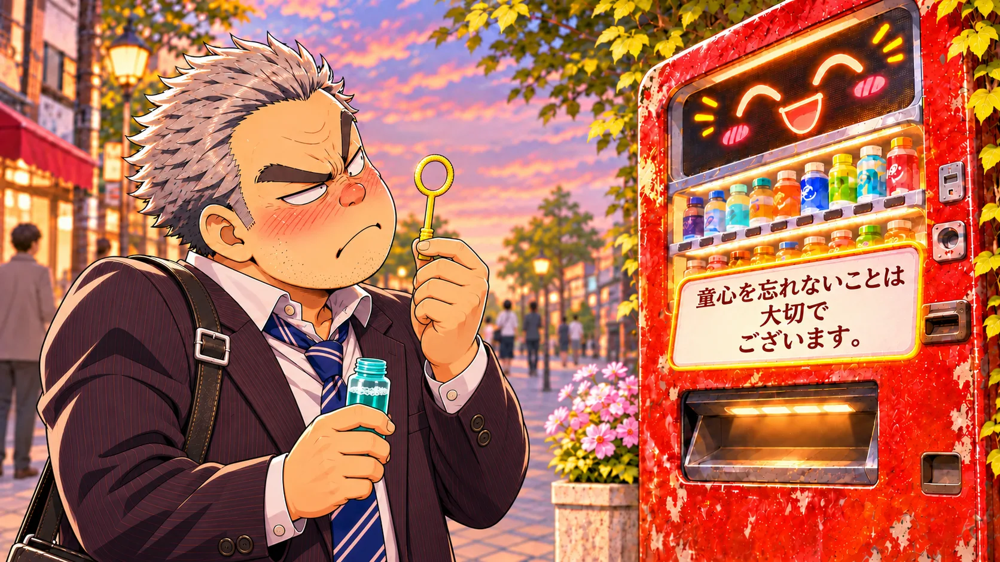
出てきたのは、しゃぼん玉。
「58歳のおっさんに何させる気だ！」
『童心を忘れないことは大切でございます。』
「余計なお世話だ！」
その帰り道。
公園のベンチに、しょんぼりした男の子が座っていた。
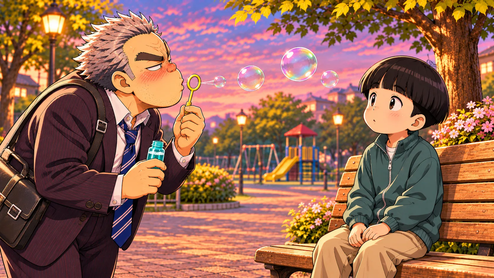
茂は、なんとなくしゃぼん玉を吹いてみた。
ふわり。
ふわふわり。
男の子が顔を上げた。
「……もう一回」
「おう」
ふわふわふわ。
男の子が笑った。
茂も、つられて笑った。
その瞬間。
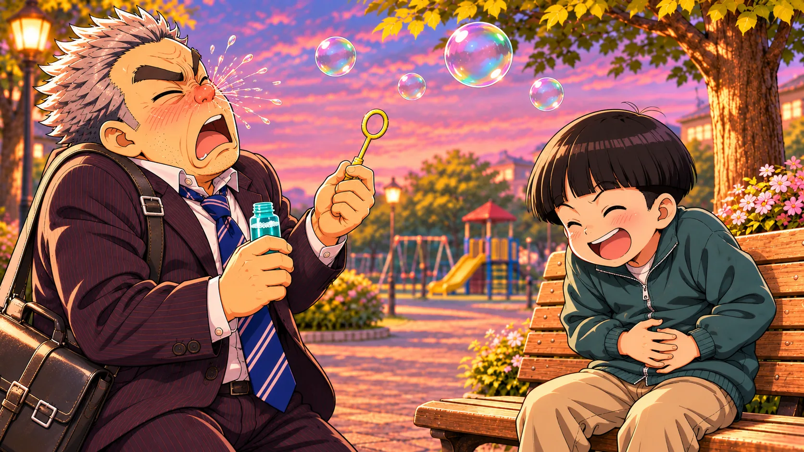
ぱちんっ！
しゃぼん玉の液が茂の鼻に飛び散った。
「うわっ！ しょっぺえ！」
男の子はお腹を抱えて笑った。
「おじちゃん、へたくそー！」
「うるせえ！ もう一回だ！」
二人は、日が暮れるまでしゃぼん玉を飛ばした。
その夜。
茂は自販機に向かって言った。
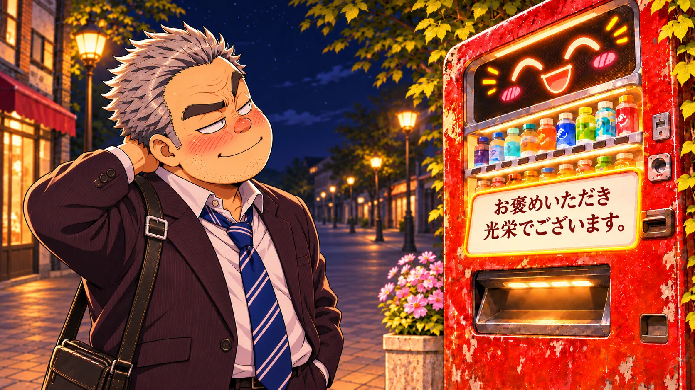
「……まあ、今日のは悪くなかったな」
『お褒めいただき光栄でございます。』
「褒めてねえよ」
『照れ屋でいらっしゃいますね。』
「お前、ほんっと腹立つな！！」
そんなある日。
茂は、ひどく疲れていた。
会社ではミスをして上司に叱られ、帰り道では突然の雨に降られた。
傘もない。
靴下までびしょ濡れ。
「……まったく、今日はろくなことがねえ」
いつもの自販機の前に立つ。
「おい。今日は頼むぞ。あったかいコーヒー、出してくれよ」
120円を入れる。
ボタンを押す。
……。
何も出ない。
「おい？」
もう一度押す。
……。
「故障か？」
すると、液晶がゆっくり光った。
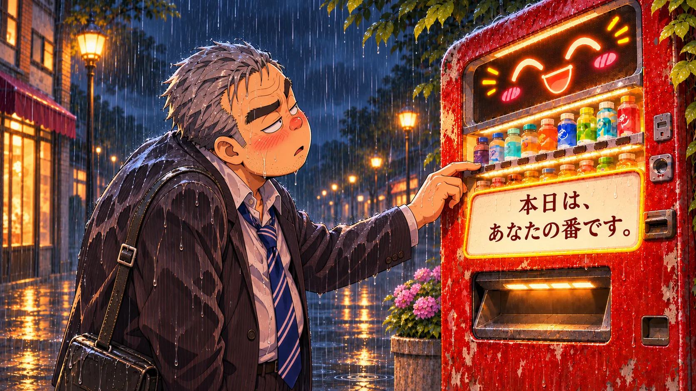
『本日は、あなたの番です。』
「……何が？」
『いつも、お疲れさまでございます。』
茂は眉をひそめた。
「なんだよ、急に気持ち悪いな」
『本日は、何もお渡しいたしません。』
「じゃあ金返せ！」
『代わりに、少々お待ちください。』
「はあ？」
そのときだった。
「あっ！ 茂さん！」
振り返ると、あの自転車の女性がいた。
「この前はありがとうございました！」
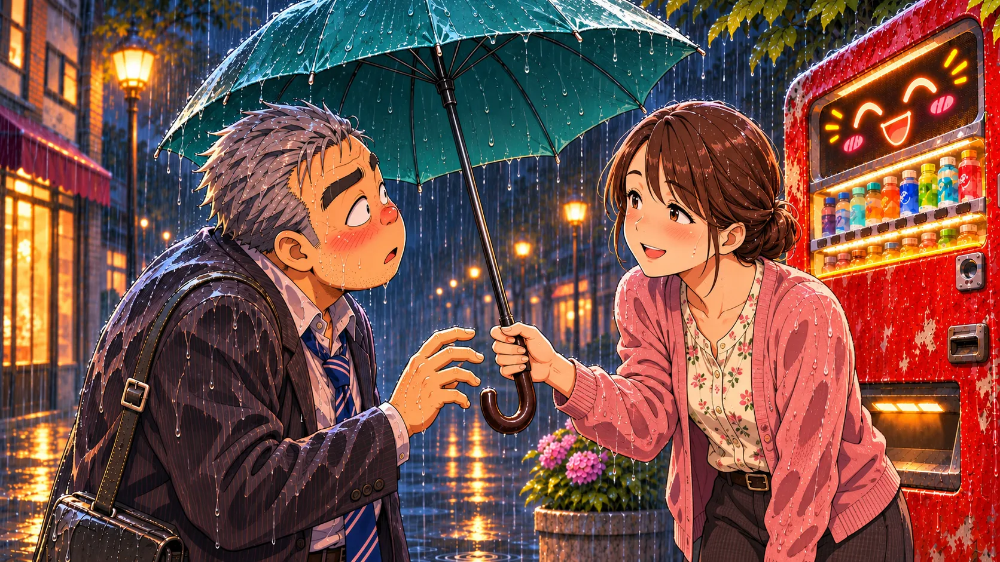
女性は傘を差し出した。
「よかったら、使ってください！」
「いや、でも……」
「私、家すぐそこなので！」
すると、向こうから八百屋の親父がやってきた。
「おお、茂さん！ ちょうどよかった！」
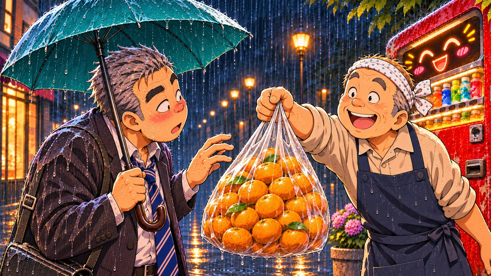
手には、みかんの袋。
「今日は売れ残っちまってな。持ってけ！」
「いや、そんなに食えねえよ！」
さらに、花屋のおばあさん。
「あら、茂さん！ この前のお花、とってもうれしかったわ」
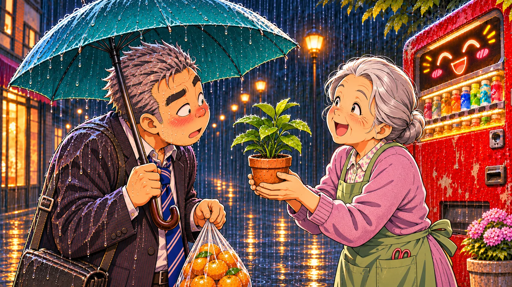
小さな鉢植えを差し出した。
「これ、よかったら育ててちょうだい」
「いやいや、俺、植物なんか……」
「大丈夫。丈夫な子だから」
そして。
「しゃぼん玉のおじちゃーーーん！！」
あの男の子が走ってきた。
「これあげる！」
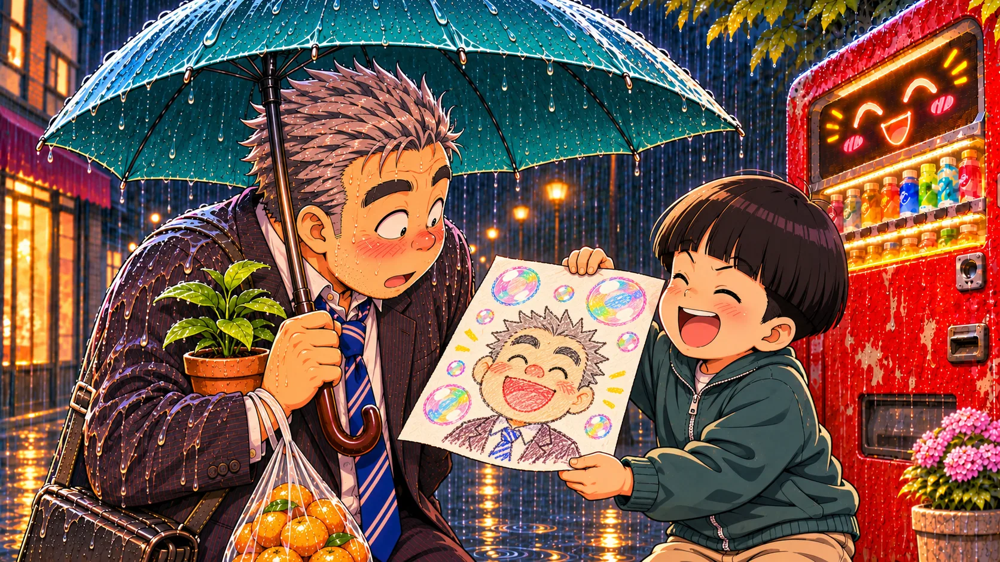
差し出されたのは、一枚の絵だった。
そこには、大きな丸い顔のおじさんと、たくさんのしゃぼん玉。
おじさんの顔には、ものすごく大きな笑顔が描かれていた。
「……これ、俺か？」
「うん！ おじちゃん、笑ってたから！」
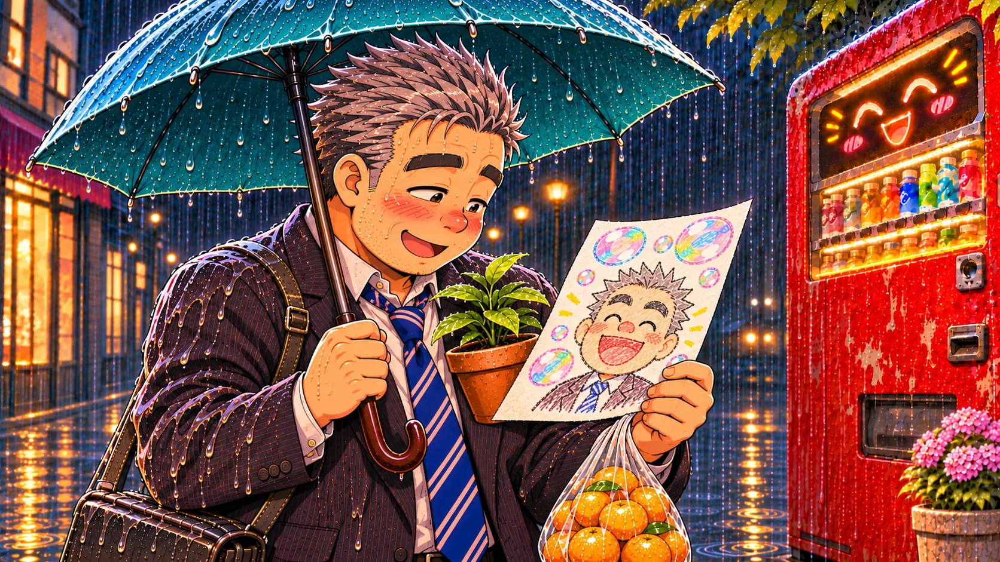
茂は、しばらく絵を見つめた。
傘。
みかん。
鉢植え。
一枚の絵。
両手は、もういっぱいだった。
「……なんだよ、これ」
思わず、笑いがこぼれた。
「俺、コーヒー一杯買いに来ただけなんだけどなあ……」
自販機の液晶が光った。
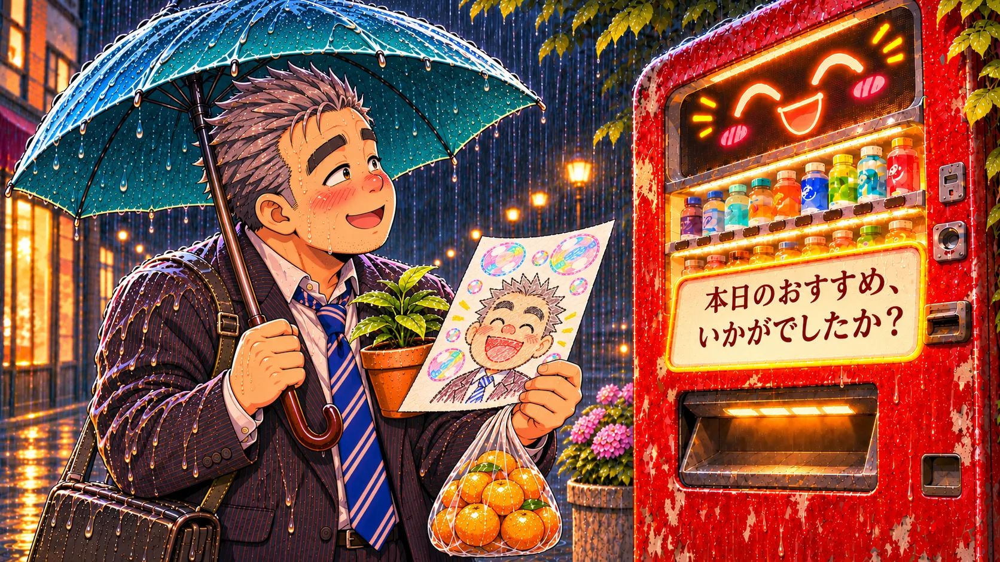
『本日のおすすめ、いかがでしたか？』
茂は、鼻をすすった。
「……悪くねえな」
『ありがとうございます。』
「ただし！」
茂は自販機を指さした。
「明日こそ、コーヒー出せよ！」
『善処いたします。』
「絶対出さねえやつだろ、それ！！」
翌朝。
茂は、いつもの自販機の前に立った。
「おはようさん」
『おはようございます。』
「今日はどうだ？」
『本日も元気に営業しております。』
「そうかい」
120円を入れる。
コーヒーのボタンを押す。
ガコンッ！
出てきたのは、
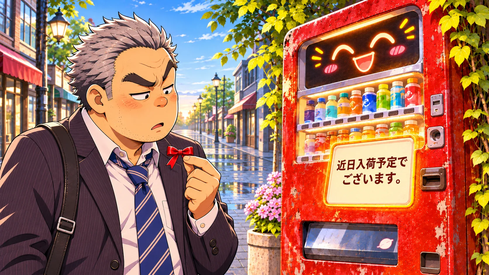
小さな赤いリボン。
「……おい」
『お買い上げありがとうございます。』
「だから！！」
茂は天を仰いだ。
「コーヒーはいつ出るんだああああ！！！」
『近日入荷予定でございます。』
「何日待たせる気だーーー！！」
そのとき、後ろから声がした。
「あのう……」
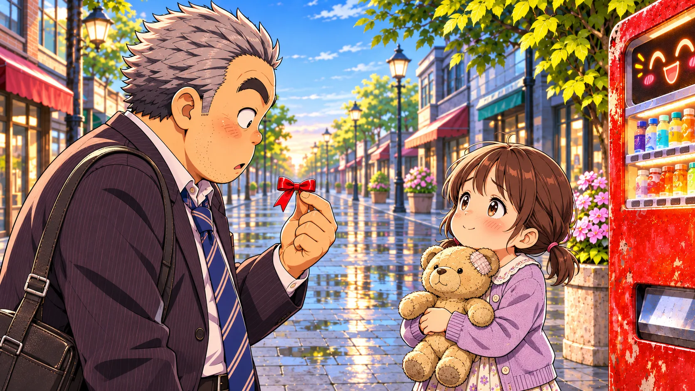
振り返ると、小さな女の子が立っていた。
手には、くたびれたぬいぐるみ。
首元のリボンがほどけて、なくなっている。
「おじちゃん……リボン、持ってる？」
茂は、自分の手の中を見た。
赤いリボン。
女の子のぬいぐるみ。
そして、あの腹立たしい自販機。
「……まったく」
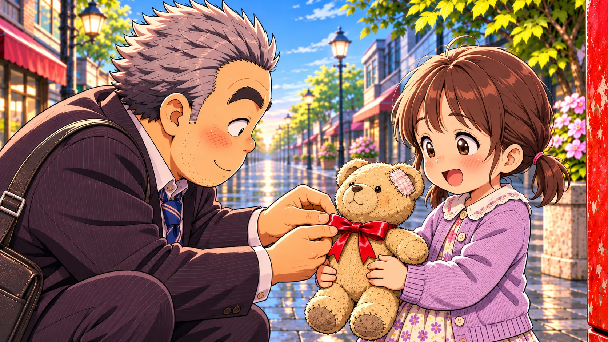
茂はしゃがみ込み、ぬいぐるみにリボンを結んでやった。
「ほらよ」
女の子の顔が、ぱあっと明るくなった。
「ありがとう！ おじちゃん！」
茂は頭をかいた。
「……いいってことよ」
女の子が走り去る。
茂は自販機を振り返った。
「お前さあ……」
『はい。』
「……まあ、明日も来てやるよ」
『心よりお待ちしております。』
茂は笑って歩き出した。
その背中に、自販機が小さくつぶやいた。
『……ちなみに、コーヒーは隣の自販機で販売しております。』
茂は、ぴたりと足を止めた。
ゆっくり振り返る。
隣には、真新しい青い自販機。
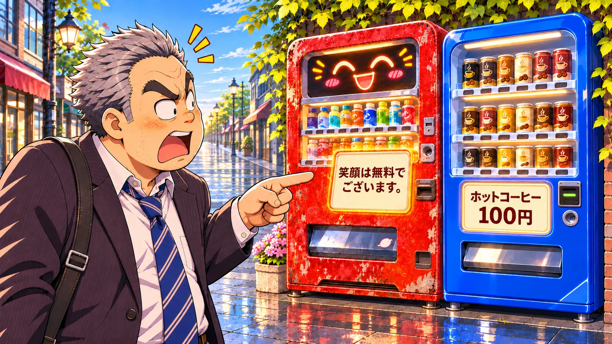
ホットコーヒー、100円。
「…………」
三秒の沈黙。
そして、商店街に怒鳴り声が響いた。
「先に言ええええええええ！！！！！」
赤い自販機の液晶には、今日も文字が光っていた。
『笑顔は無料でございます。』
おしまい。
最後まで読んでくださって、ありがとうございます🌸
あなたの心にも、小さな何かが残っていたら嬉しいです。
また次回も、少しずつ物語を届けますね。